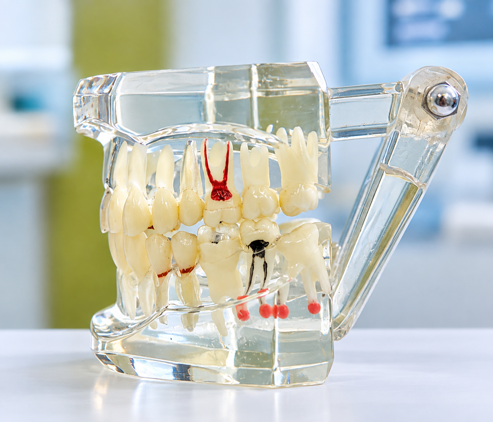

01
Persistent Tooth Pain
Pain that persists or returns, particularly after eating or drinking, may require further dental assessment.
When a natural tooth can be saved, we believe keeping it is often the best choice for your long-term dental health. We use careful diagnosis, magnification, modern technology, and precise treatment to help preserve your natural tooth.

Root canal treatment is a procedure used to treat a tooth when the tissue inside it becomes inflamed or infected. Rather than removing the tooth, treatment can allow the natural tooth to be cleaned, treated and restored.
At our clinic, the focus is not simply on completing a root canal. We believe that careful diagnosis, precision during treatment and appropriate restoration are all important parts of giving a natural tooth the best possible opportunity for long-term function.
Not every toothache requires a root canal. A proper clinical examination and diagnosis are essential before deciding on treatment.
Pain that persists or returns, particularly after eating or drinking, may require further dental assessment.
Prolonged sensitivity to hot or cold may indicate that the inner tissues of a tooth need evaluation.
Extensive decay can affect the inner part of a tooth and may eventually require endodontic care.
An injured tooth may sometimes develop internal problems even after the initial injury has settled.

Root canal treatment involves working within very small anatomical spaces. Good visualisation can help the clinician work with greater precision during detailed procedures.
We use high-magnification dental loupes with 7.5× magnification to enhance visualisation during treatment.
The tooth is carefully examined to understand the source of the problem and determine the appropriate treatment approach.
The affected internal tissues are treated and the root canal system is carefully cleaned and prepared.
Once appropriately treated, the canal system is sealed to help protect the treated tooth.
The tooth may require an appropriate final restoration to help restore its function and protect it from further damage.
Our philosophy combines experience, technology and careful clinical judgement rather than treating every tooth in exactly the same way.
When a tooth can be predictably saved, preserving the natural tooth is an important part of our treatment philosophy.
High-magnification loupes and modern technology support detailed clinical work.
Treatment decisions are based on careful diagnosis and appropriate clinical assessment.
Stringent sterilisation and infection control practices are an integral part of clinical care.
Modern dental techniques and appropriate anaesthesia are used to make treatment as comfortable as possible. Your dentist will assess your individual situation and discuss what to expect before treatment.
Symptoms such as persistent pain, prolonged sensitivity, swelling or a deeply damaged tooth can indicate the need for further assessment. A proper examination is required before deciding whether root canal treatment is appropriate.
In many situations, root canal treatment can allow a damaged or infected tooth to be retained. However, whether a tooth can be predictably saved depends on its condition and requires an individual clinical assessment.
Dental procedures can involve very small anatomical structures. High magnification can enhance visualisation and help support precision during detailed treatment.
A root-filled tooth may require an appropriate final restoration depending on the amount of remaining tooth structure and its clinical condition. Your dentist can recommend the appropriate restoration after assessment.
A consultation allows us to examine your tooth, understand the problem and discuss the appropriate treatment options with you.